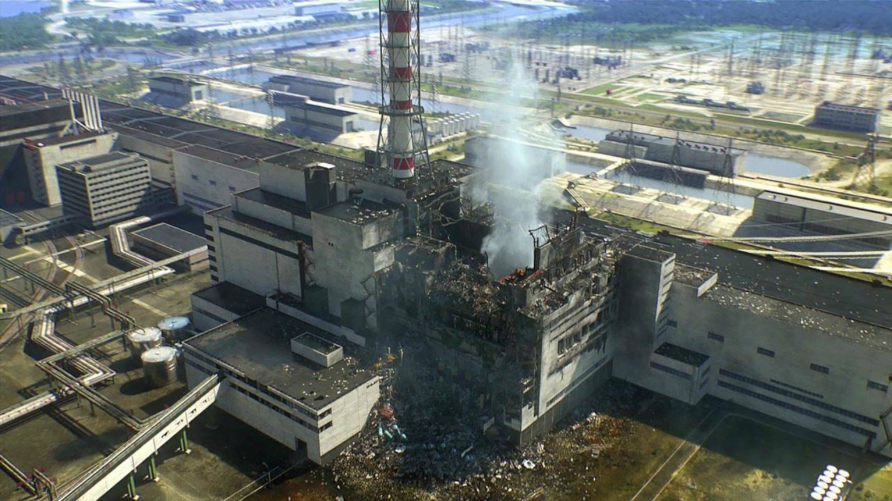
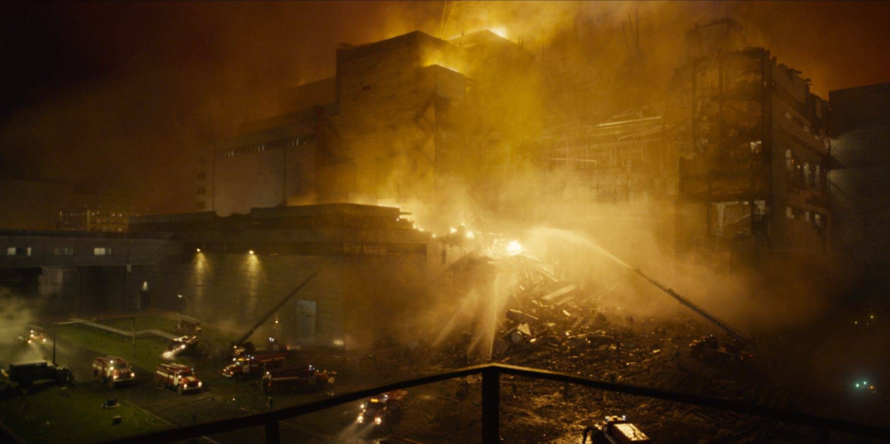

Авария на Чернобольской АЭС
В 1986 году, на территории Украинской ССР, в городе Чернобыль, произошла чудовищная авария, в результате которой был разрушен четвертый энергоблок Чернобыльской АЭС.
Ход событий
На ЧАЭС в ночь на 26-е апреля проводились плановые испытания. Однако, в результате ошибочных действий сотрудников станции, а также в из-за скрытой информации о структурной особенности самого реактора, прогремели два мощных взырва: сначала был уничтожен сам реактор, а далее реакторное помещение. Погиб сотрудник станции Валерий Ходемчук, тело которого так и не было обнаружено.
Прибыли пожарные на тушение. Ценой своей жизни им удалось пламя на крыше четвертого энергоблока: пожарные впоследствии погибли от лучевой болезни. Однако, выброс колоссального количества радиоактивных веществ продолжался. Именно поэтому была созвана комиссия, по которой эвакуировали первых пострадавших.
Через 36 часов началась масштабная эвакуация населения из города и близлежащих районов.
Дальнейшие действия советской комиссии по ликвидации последствий были следующие: реактор был засыпан сместью брома с песком, что прекратило выброс радиоактивных веществ. Были проведены массовые расстрелы животных, дабы они не разносили заразу по территории Украины.
Причины
- грубые нарушения эксплуатации реактора, не соблюдение техники безопасности;
- конструктивные ошибки в самом реакторе, сокрытие этой информации;
- попытка довести эксперимент до конца.
Последствия
В первую очередь были внесены изменения в конструкции реакторов типа РБМК. Проведены расследования. Наказаны виновники.